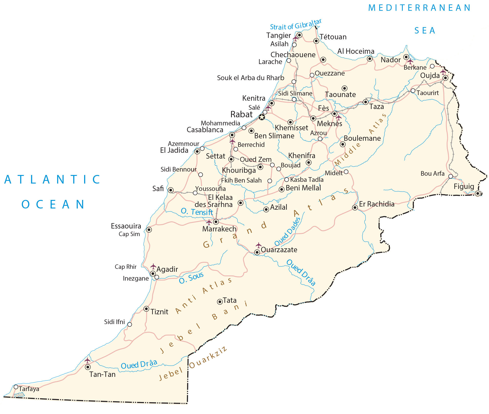

Morocco is located in Northwestern Africa. It borders Algeria to the east, as well as the disputed territory of Western Sahara to the south. Also, it’s a short distance of 13 kilometers that separates Morocco from Spain to the north by the Strait of Gibraltar.
To the west, it shares a coastline with the North Atlantic Ocean that extends for 2380 kilometers (1480 mi). Whereas its coastline with the Mediterranean Sea to its north is approximately 820 kilometers (510 mi). Morocco’s capital city is Rabat but the largest city is Casablanca.
Go back home